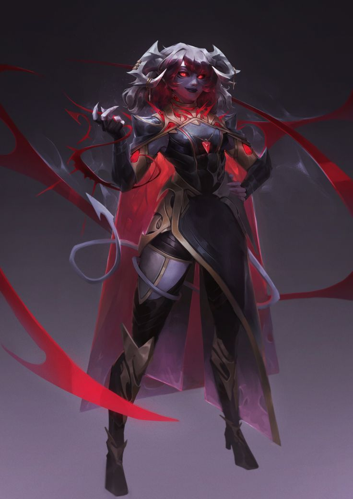

Pahna Dutou
Personnage¶
Race : TIeflin
Classe : Sorcière
Niveau : 1 (BM +2)
Points de vie : 10
Vitesse : 30 ft.
| FOR | DEX | CON | INT | SAG | CHA |
|---|---|---|---|---|---|
| 15 (+2) | 14 (+2) | 15 (+2) | 16 (+3) | 12 (+1) | 18 (+4) |
| ◎ +2 | ◎ +2 | ◎ +2 | ◎ +3 | ◉ +3 | ◉ +6 |
| Compétences | |
|---|---|
| ◎ Acrobaties (Dex) : +2 | ◎ Investigation (Int) : +3 |
| ◉ Arcanes (Int) : +5 | ◎ Médecine (Sag) : +1 |
| ◎ Athlétisme (For) : +2 | ◎ Nature (Int) : +3 |
| ◉ Discrétion (Dex) : +4 | ◎ Perception (Sag) : +1 |
| ◎ Dressage (Sag) : +1 | ◎ Persuasion (Cha) : +4 |
| ◉ Escamotage (Dex) : +4 | ◉ Religion (Int) : +5 |
| ◉ Histoire (Int) : +5 | ◎ Représentation (Cha) : +4 |
| ◉ Intimidation (Cha) : +6 | ◎ Survie (Sag) : +1 |
| ◎ Intuition (Sag) : +1 | ◎ Tromperie (Cha) : +4 |
Maîtrises¶
Armure : Armures Légères
Armes : Armes Simples, sarbacanes, épées courtes et fouets
Outils : Matériel d'Alchimiste, Kit d'Empoisonneur, Kit de Déguisement, Outils de Voleur
Langues : Commun, Infernal
Description¶
Âge : 23 ans
Taille : 1,65 m
Poids : 52 kg
L'apparence de Pahna est profondément dérangeante, non pas à cause d'une monstruosité évidente, mais à cause d'un vide subtil et effrayant qui semble l'imprégner. Elle se meut avec une économie de mouvement troublante, comme une marionnette dont les fils seraient tenus par une main paresseuse, chaque geste étant délibéré mais dépourvu de l'élan naturel de la vie.
Sa nature infernale est indéniable. Sa peau est d'un gris cendre blafard, une couleur de maladie qui fait ressortir la moindre goutte de sang avec une clarté choquante. Deux cornes noires et lisses s'élancent de son front, traçant une courbe élégante vers l'arrière avant de se terminer en pointes acérées. Sa longue et fine queue, terminée par une pique en forme de flèche, semble douée d'une vie propre, s'enroulant et se tordant lentement, trahissant une impatience ou un intérêt que son visage ne montre jamais. Ses yeux sont peut-être son trait le plus inhumain : de grands iris d'un rouge sanglant, mais vitreux et dénués de toute émotion. Ils ne reflètent pas la lumière comme des yeux normaux ; ils l'absorbent. Regarder dans les yeux de Pahna, c'est regarder dans le vide.
Mais le véritable témoignage de sa nature est gravé sur sa peau. Ses bras, ses mains, et toute autre parcelle de peau qu'elle laisse visible sont un parchemin de souffrance. Un réseau complexe de fines cicatrices argentées, anciennes et guéries, se superpose à des coupures plus récentes, des lignes rouges et nettes, preuves de ses rituels quotidiens. Ce n'est pas le résultat de combats, mais une œuvre d'art méticuleuse et horrible. Elle ne cherche pas à les cacher ; elles sont une partie intégrante de son identité et de son art magique.
Elle porte des vêtements sombres et fonctionnels, souvent en cuir usé, choisis non pour leur style, mais pour leur praticité. Les manches de sa tunique sont généralement courtes ou retroussées, offrant un accès facile à la toile de ses avant-bras. Le tissu autour de ses poignets est invariablement taché d'une couleur rouille sombre. À sa ceinture est accrochée une sacoche à composants et, bien en vue, une dague sacrificielle à la lame d'obsidienne, dont le manche est poli par l'usage. Une odeur faible mais pénétrante l'entoure, un mélange dérangeant de fer et d'herbes antiseptiques.
%% Presque toujours, son diablotin familier est perché sur son épaule, une petite créature de soufre et de méchanceté. C'est lui qui observe le monde avec une curiosité malveillante, ses petits yeux jaunes brillant là où ceux de Pahna restent vides. Souvent, c'est le léger ricanement ou le battement d'ailes impatient du diablotin qui annonce ses intentions, bien avant que la marionnette de chair qui lui sert de maîtresse ne daigne bouger.
%%

Aptitudes¶
Aptitudes de Race¶
Vision dans le Noir. Grâce à votre héritage infernal, vous possédez une vision acclimatée aux ténèbres. Vous pouvez voir à 60 ft. (18m/12 cases) dans une zone de lumière faible comme vous verriez avec une lumière vive, et dans le noir comme avec une lumière faible. Vous ne pouvez pas discerner les couleurs dans l'obscurité, seulement les nuances de gris.
Résistance Infernale. Vous êtes résistant aux dégâts de feu.
Héritage de Minauros. Vous connaissez le cantrip Main de Mage.
Aptitudes de Classe¶
Incantation¶
Vous avez appris à saisir et modeler la magie qui vous maudit en sorts. Vous lancez vos sorts par le Charisme.
Vous connaissez quatre cantrips :
Vous connaissez deux sorts de niveau 1 :
Vous disposez de 2 emplacements de sorts de niveau 1.
Vide¶
Votre âme a été séparée de votre corps, vous êtes maintenant dans un limbo entre la vie et la mort. Lorsque vous ou votre familier réduisez une créature hostile à 0 point de vie, vous pouvez drainer un peu de sa force vitale, gagnant un nombre de points de vie temporaires égal à votre modificateur de Charisme + votre niveau de sorcière (minimum 1).
Saignement¶
Pour une action, choisissez une créature que vous pouvez voir à 60 ft. Cette créature doit réussir un jet de sauvegarde de Constitution ou, à chaque fois qu'elle prend des dégâts, perdre 1d4 points de vie supplémentaires. Cet effet persiste jusqu'à la fin de votre prochain tour.
Mauvaise Fortune¶
Pour une action, choisissez une créature que vous pouvez voir à 60 ft. de vous. Jusqu'à la fin de son prochain tour, chaque fois que cette créature obtient un 20 sur un jet de d20, le jet devient un 1.
Equipement¶
- Un fouet et une sarbacane
- Une [[boule de cristal]]
- Un sac d'érudit
- Un petit couteau
- Une armure de cuir, une arbalète légère, 20 carreaux et une dague
- 10 Pièces d'Or
Historique¶
Il fut un temps où le nom de Pahna n'était qu'un murmure. C'était celui d'une jeune Tieflin effacée, une ombre parmi les ombres dans les ruelles surpeuplées d'une cité sans nom. Elle n'avait ni grande ambition, ni talent particulier. Sa seule particularité était une solitude profonde, une invisibilité qui la protégeait autant qu'elle l'isolait. Elle ne demandait rien d'autre que de passer inaperçue, un vœu qui, par une ironie cruelle, attira sur elle le regard de ce qui n'aurait jamais dû la voir.
Sa vie bascula par une nuit sans lune. Le hasard la plaça sur le chemin du Voïvode Carmin, un seigneur vampire dont l'ennui n'avait d'égal que sa puissance. Il ne vit pas en elle une victime à vider, mais une toile vierge, une curiosité. Intrigué par son héritage infernal, il décida de faire d'elle le réceptacle d'un rituel impie, une expérience visant à créer une nouvelle forme de servitude.
La douleur fut la première chose, une griffe glaciale et déchirante. Mais la seconde fut bien pire. Ce ne fut pas une sensation, mais une absence. Elle sentit son être se disloquer, comme une corde tendue qui se rompt. Son esprit fut projeté en arrière, et elle se vit elle-même, son propre corps se débattant dans les griffes du monstre, comme si elle regardait une scène de théâtre macabre. Le Voïvode, sentant que le rituel avait échoué à produire l'esclave espéré, la jeta dans les immondices, dégoûté par le résultat : une poupée brisée, vivante mais vidée.
Pahna survécut, mais l'enfant qu'elle était s'était évaporée. À sa place se trouvait une créature vivant dans un brouillard cotonneux, une spectatrice de sa propre existence. Elle voyait parfois son âme, un double translucide et tremblant flottant près d'elle, réagissant avec une terreur ou une tristesse que son corps, lui, était incapable de ressentir. La faim, le froid, la fatigue n'étaient que des informations distantes, des données concernant une marionnette de chair et d'os qu'elle habitait sans la piloter.
La première étincelle de réalité vint d'un accident. Une chute, un genou écorché sur les pavés. La douleur, vive, pure, fulgurante, fut comme un coup de tonnerre dans le silence de son esprit. Pour la première fois depuis des semaines, son âme et son corps semblèrent se toucher. Elle était réelle. La sensation ne dura qu'un instant, mais elle fut inoubliable.
La deuxième découverte fut plus sombre. Acculée par des voyous qui voyaient en elle une proie facile, la panique de son âme spectrale déclencha quelque chose. La magie du Voïvode, dormante en elle, jaillit. Le sang de son agresseur se mit à perler à travers sa peau, puis à couler en filets pour tracer des runes impies dans l'air. L'homme tomba à genoux, hurlant, son agonie se répercutant en elle non pas comme une douleur, mais comme une symphonie. Et dans cette cacophonie de souffrance, elle se sentit enfin, et pour de bon, entière. L'extase de cette connexion fut la plus grande qu'elle ait jamais connue.
C'est ainsi que la Sorcière est née. L'automutilation devint sa méditation, chaque coupure une tentative de se rappeler à l'ordre, de prouver son existence par la douleur. Le sadisme devint sa quête, chaque cri de ses victimes une note dans la musique qui seule pouvait la faire se sentir vivante.
%% Un jour, alors qu'elle s'adonnait à l'un de ses rituels sanglants, une créature apparut dans un nuage de soufre. Un diablotin, attiré non par le sang, mais par la nature unique de son âme fracturée. Il fut le premier être à la voir telle qu'elle était vraiment : un corps et un esprit à la dérive. Il ne la jugea pas. Il la reconnut. Ce familier devint son ancre, son confident, le seul témoin de sa condition. %%
Aujourd'hui, Pahna n'erre plus sans but. Elle a un objectif, aussi simple que vital : sentir. Elle est une collectionneuse de sensations fortes, une artiste dont la toile est la chair et l'encre, le sang. Guidée par la faim insatiable de son âme, elle parcourt le monde, une marionnette à la recherche de la prochaine symphonie de la souffrance qui, pour un instant, lui permettra de tirer ses propres ficelles.
Aptitude d'Historique¶
Sorcière sanguine, Pahna peut faciliter sa récupération magique par le sacrifice de son propre sang. En se taillant le bras et en se concentrant pendant une minute, Pahna peut récupérer un emplacement de sort de niveau n en dépensant 10*n points de vie. Une fois qu'elle a utilisé cette capacité, Pahna ne peut pas la réutiliser avant d'avoir terminé un repos long.
Traits de Personnalité¶
Traits : Je dis de façon brute ce que les autres insinuent ou cachent. J'aime me glisser dans des endroits où personne ne peut m'atteindre.
Idéal : J'aide ceux qui m'aident, c'est la base pour survivre
Lien : Personne ne devrait à avoir vivre les horreurs que j'ai vécues.
Défaut : C'est pas du vol si j'en ai besoin plus que l'autre.
Alignement : Neutre Mauvais
Conseils de Jeu¶
La plupart du temps, sa voix est un monotone plat, sans inflexion ni émotion. Elle délivre les informations les plus horribles avec le calme d'un apothicaire listant ses ingrédients. Elle parle de son propre corps comme d'un objet extérieur : "Le corps requiert du repos", "La marionnette est endommagée".
Ses yeux ne se fixent jamais vraiment sur son interlocuteur. Ils semblent regarder juste par-dessus leur épaule, comme si elle observait son propre double astral qui flotte à côté d'elle. Elle a l'habitude de suivre le tracé de ses anciennes cicatrices sur ses avant-bras avec l'ongle de son pouce. C'est un geste lent, répétitif, presque méditatif.